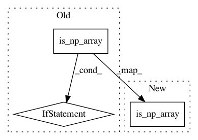

a807f6de32213cfec9462c8df2ca1fad4f9bcbad,python/mxnet/gluon/loss.py,L1Loss,hybrid_forward,#L1Loss#Any#Any#Any#Any#,189
Before Change
label = _reshape_like(F, label, pred)
loss = F.np.abs(label - pred) if is_np_array() else F.abs(label - pred)
loss = _apply_weighting(F, loss, self._weight, sample_weight)
if is_np_array():
if F is ndarray:
return F.np.mean(loss, axis=tuple(range(1, loss.ndim)))
else:
return F.npx.batch_flatten(loss).mean(axis=1)
else:
return F.mean(loss, axis=self._batch_axis, exclude=True)
class SigmoidBinaryCrossEntropyLoss(Loss):
rThe cross-entropy loss for binary classification. (alias: SigmoidBCELoss)
BCE loss is useful when training logistic regression. If `from_sigmoid`
After Change
super(L1Loss, self).__init__(weight, batch_axis, **kwargs)
def hybrid_forward(self, F, pred, label, sample_weight=None):
abs_fn = F.np.abs if is_np_array() else F.abs
label = _reshape_like(F, label, pred)
loss = abs_fn(label - pred)
loss = _apply_weighting(F, loss, self._weight, sample_weight)
In pattern: SUPERPATTERN
Frequency: 4
Non-data size: 3
Instances
Project Name: apache/incubator-mxnet
Commit Name: a807f6de32213cfec9462c8df2ca1fad4f9bcbad
Time: 2020-07-27
Author: szha@users.noreply.github.com
File Name: python/mxnet/gluon/loss.py
Class Name: L1Loss
Method Name: hybrid_forward
Project Name: apache/incubator-mxnet
Commit Name: 5dc404dfb0cb5e9a034c9db5d58721e15791ad33
Time: 2020-11-19
Author: lausen@amazon.com
File Name: python/mxnet/gluon/block.py
Class Name: HybridBlock
Method Name: export
Project Name: apache/incubator-mxnet
Commit Name: 5dc404dfb0cb5e9a034c9db5d58721e15791ad33
Time: 2020-11-19
Author: lausen@amazon.com
File Name: python/mxnet/gluon/block.py
Class Name: Block
Method Name: save_parameters
Project Name: apache/incubator-mxnet
Commit Name: a807f6de32213cfec9462c8df2ca1fad4f9bcbad
Time: 2020-07-27
Author: szha@users.noreply.github.com
File Name: python/mxnet/gluon/loss.py
Class Name: L2Loss
Method Name: hybrid_forward